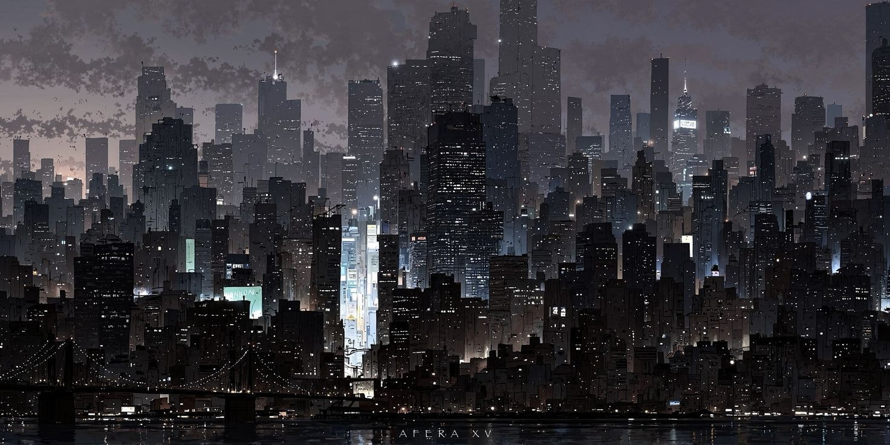

Tokyo Ghoul is a anime/manga series that is about a college student named Ken Kaneki (main character) who gets attacked by a ghoul and is transformed into a half- human and half- ghoul. In this anime, ghouls appear to be human but they must consume human flesh to survive, which creates a conflict between ghouls and humans. The story follows Ken Kaneki struggles as he is trying to manage his human life as a half ghoul, half human. This story takes place in Tokyo, Japan, but puts a spin on this city with having the population consist of ghouls.
✰ This anime explores interesting themes of identity, and the struggle between worlds for the main character Kaneki. There are insane visuals in the creation of the world of this series allowing for action in the atmospheric world. Although this place is Tokyo, I like the extra spin it brings with having ghouls living withiin it aswell. It kind of reminds me of the Avengers fighting in New York.
✰ There is major symbolism of the popular flower "red spider lily" representing death and transformation, which is used to describe Kanekis emotional and mental transformations.This is a huge part of the anime, and even becomes a symbol to help with the identity of tokyo ghoul. This flower is used in the intro and outro of the show, which allows for the symbolism to be expressed.
✰ There is a coffee shop in this anime named "Anteiku" which serves as a place for the main character to work and a place for ghouls to find support and guidance. This also serves as a place for ghouls to blend in with the humans as well, as it's open to public. I think this is intresting because it shows symbolism in this place being so innocent but having dark secrets hidden within, like kanekis character.